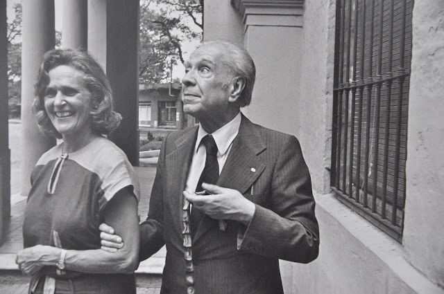

Comparte tus experiencias, imágenes y relatos que inspiren la tradición y la cultura.
Soy alguien muy curioso, resiliente, y creativo. A lo largo de mi vida, he aprendido a adaptarme a los cambios, a buscar siempre más allá y a canalizar mi energía hacia mi bienestar y el de mi familia. Las circunstancias me han dado un camino, por el que he aprendido a navegar de la mejor manera posible. Entre todo aquello que ha sido parte de mi crecimiento, la lectura ha ocupado un lugar especial, moldeando mi forma de ver el mundo y dándome claridad en los momentos más difíciles.
Recuerdo con claridad mis primeros juegos con otros niños, mis primeras pinturas que reflejaban mi forma de ver el mundo y el esfuerzo constante de mi mamá por darme todo lo esencial, aunque muchas veces fue difícil. A los seis años, empecé a estar mucho más tiempo solo en casa, lo que me permitió desarrollar una independencia temprana. Sin embargo, también me dio una mezcla de soledad y reflexión que marcaría mi carácter. No tengo demasiados recuerdos de mi infancia más temprana, pero hay uno que guardo con especial cariño: estoy recostado sobre mi madre en la cama mientras ella me lee un libro.
Eran historias clásicas, como las que veía en la televisión, pero en su voz sonaban diferentes. Había un realismo distinto, una calidez especial en su manera de narrarlas.
Tal vez porque lo hacía justo antes de dormir, o quizás vez porque su voz las hacía aún más bellas.
Conforme fui creciendo, esa actividad desapareció de nuestra rutina, pero la lectura no. Llegaron los primeros textos escolares y, aunque mi mamá nunca tuvo dinero para comprarme —o quizás nunca le pareció importante— un cuadernillo para aprender a leer, se sentaba conmigo
con paciencia. Leíamos juntos fragmentos de cuentos, titulares de periódicos, cualquier cosa que estuviera a nuestro alcance, con tal de que yo pudiera mejorar.
Entre los 14 y los 17, me desconecté por completo de los libros. No fue algo planeado, simplemente la música ocupó todo mi espacio mental y emocional. El rock, el punk, el pop
y el synth se convirtieron en el reflejo de mis cambios internos, en la forma en que procesaba el mundo. Mis días estaban marcados por sonidos y letras, por emociones intensas
que resonaban con mis pensamientos.
Finalmente, a los 17 años, algo cambió. La filosofía llegó a mi vida, y con ella, el libro que me devolvió a la lectura: Así habló Zaratustra.
Recuerdo que mi profesor de filosofía no quería que lo leyera, y eso solo aumentó mi curiosidad. Fue un libro que, sin duda, me impactó y marcó mi manera de pensar.
A partir de ese momento, la lectura volvió a ser una parte esencial de mi vida, ya no solo como un hábito,
sino como una herramienta para comprender el mundo y a mí mismo.
Actualmente leo indiscriminadamente en PDF o en libros, pero la experiencia de palpar las hojas me es más familiar y significativa.
Durante mi recorrido por la lectura, que ha sido más breve de lo que desearía, me he topado con escritores que me han marcado profundamente. Les dejo algunas citas que espero disfruten tanto como yo.
Nietzsche (1883) menciona que "El espíritu libre pisa sobre las convicciones; pero el hombre vulgar es esclavo de ellas" (p. XX).
Spinoza (1677) afirma que "una inteligencia que sea de hecho finita o de hecho infinita, debe comprender los atributos de Dios y las modificaciones de Dios, y no otra cosa" (p. XX).

Borges (1985) expresa que "una persona que esté enamorada vea a la otra como Dios la ve, es decir, la ve del mejor modo posible" (En diálogo, I, 16).
1. Wilhelm, F. (2018). Así hablaba Zaratustra (1.ª ed.). Grupo editorial: Editorial Universidad de Guadalajara. Publicado en asociación con: Programa Universitario de Fomento a la Lectura Letras para Volar.
2. Spinoza, Baruch (1980). Ética demostrada según el orden geométrico (Vidal Peña, trad.).
3. Borges, J. L. (2017, 19 de febrero). Osvaldo Ferrari: Sobre el amor (1984). Borges Todo el Año.